El puente y las almas de la ciudad
Si hay un lugar que define Estambul tal como yo la veo, no es un palacio ni una mezquita, sino un punto de encuentro: una conexión palpitante que encarna esa esencia fascinante y caótica que siempre he percibido aquí.
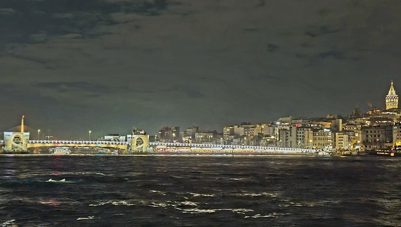
El agua divide; el puente abraza el alma nocturna del Cuerno de Oro.
Es el Galata Köprüsü, el Puente de Gálata, visto de noche. Mi mirada intenta captar precisamente eso: una imagen que vive de contrastes, las aguas oscuras e inquietas del Cuerno de Oro atravesadas por un río horizontal de luz. Aquí se revela el alma múltiple de Estambul.
Empezamos en Stamboul, en la orilla sur, en Eminönü. Es el alma imperial y religiosa: la tierra de los sultanes, del Palacio de Topkapı, de las cúpulas de Santa Sofía y de Sultanahmet Camii, la Mezquita Azul. Aquí vive la historia romana, bizantina y otomana.
Las raíces de Constantinopla
Resulta fascinante comprobar cómo el ADN de Constantinopla sigue siendo legible en la Estambul moderna. El actual distrito de Fatih corresponde en gran medida a la ciudad representada en este mapa: las huellas bizantinas siguen ahí, a menudo ocultas a plena vista.
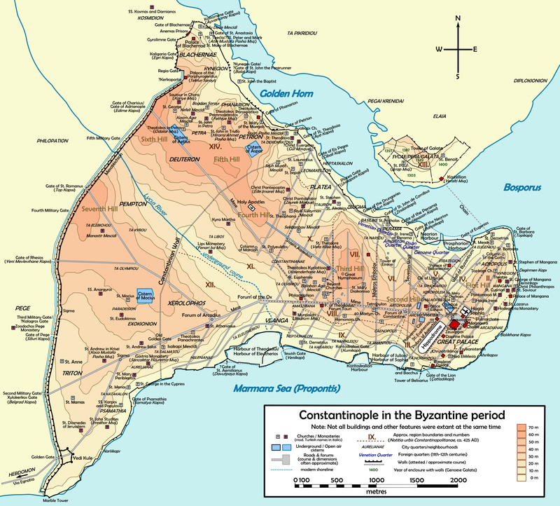
Nuestro paseo comienza en las Murallas Terrestres, las Murallas de Teodosio, en el lado occidental del mapa. Son las legendarias defensas que el sultán Mehmed II, Fatih el Conquistador, logró franquear en 1453. En el asedio otomano participaron enormes cañones, entre ellos los fabricados por un fundidor húngaro llamado Orbán.
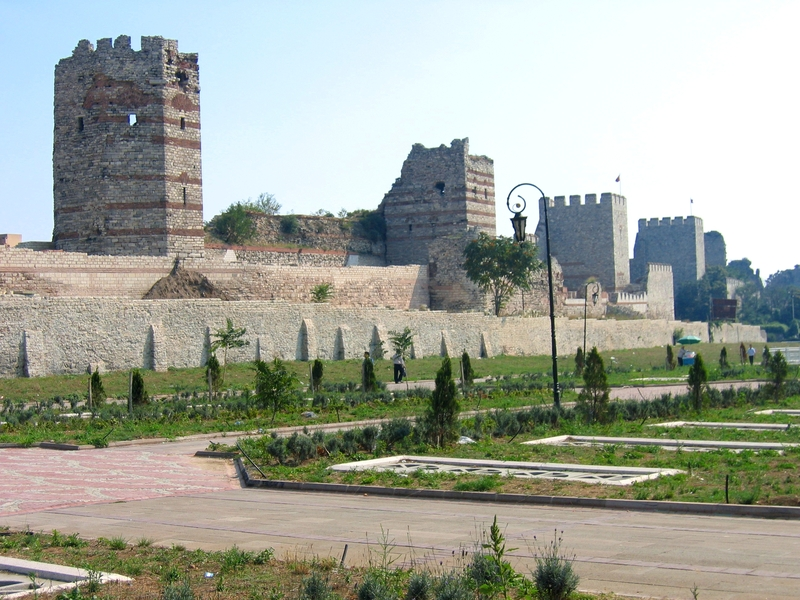
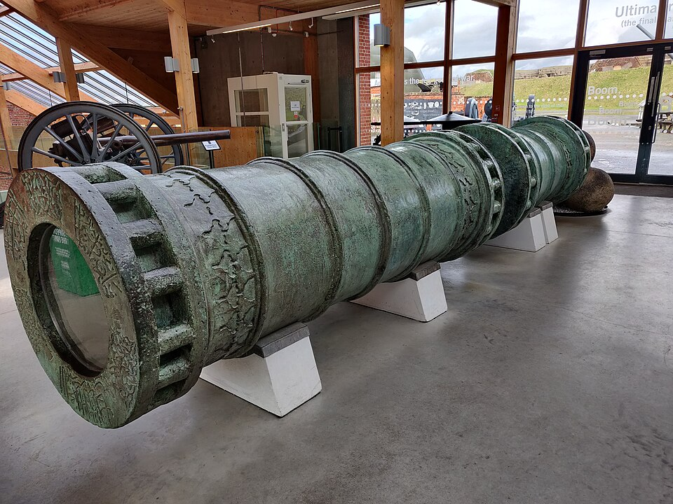
Según el relato tradicional, Orbán ofreció primero sus servicios a los bizantinos, que no podían pagar sus exigencias. Mehmed, en cambio, financió su trabajo. Las grandes bombardas castigaron el sector de la Puerta de San Romano, asociado a la actual zona de Topkapı: este tramo fue decisivo en el asalto final y en la entrada de las tropas otomanas.
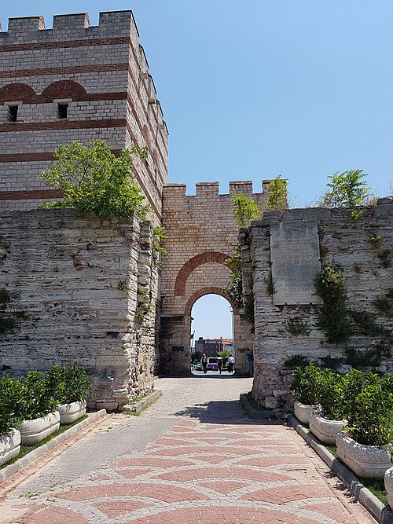
Un poco más al sur nos espera otra historia. Altınkapı, la Puerta Dorada bizantina, era la entrada ceremonial del Imperio romano de Oriente. Tras la conquista, Mehmed la incorporó a Yedikule, la Fortaleza de las Siete Torres. Las torres otomanas abrazan los magníficos arcos de mármol de la puerta imperial bizantina: dos épocas reunidas en una sola arquitectura.
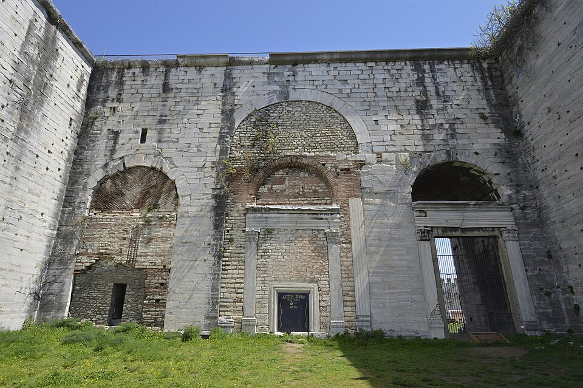
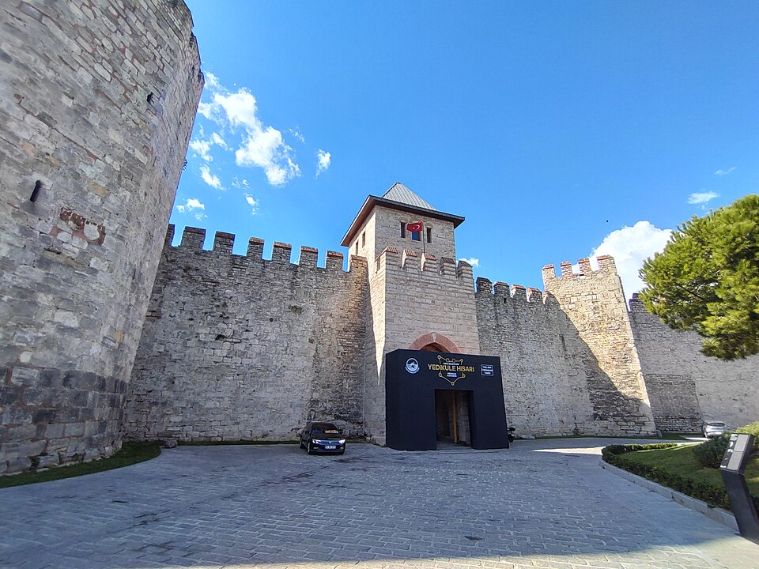
La mirada reconoce instintivamente los restos de aquella armadura legendaria. Las Murallas de Teodosio todavía se extienden a lo largo de kilómetros, una serpiente de piedra y torres que marca el límite de la ciudad antigua dentro de la metrópolis moderna. Caminar junto a ellas permite rozar mil años de historia bizantina y el momento en que aquel mundo terminó.
Dentro de las murallas, muchas de las iglesias señaladas en el mapa sobrevivieron al convertirse en mezquitas.
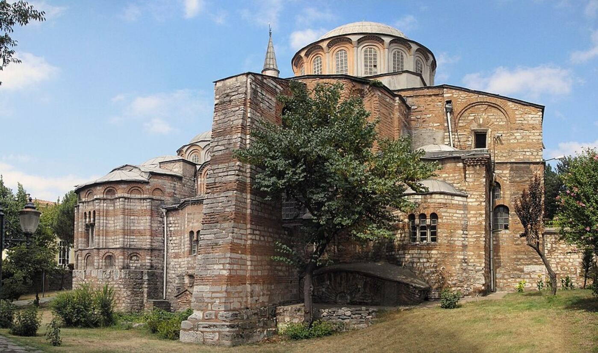
Nuestro primer encuentro con estas supervivientes es la Iglesia de San Salvador de Cora, hoy Mezquita de Kariye. Su exterior revela una historia estratificada: ladrillo y piedra bizantinos, cúpulas y ábsides, y el minarete que los otomanos añadieron tras convertirla en mezquita.
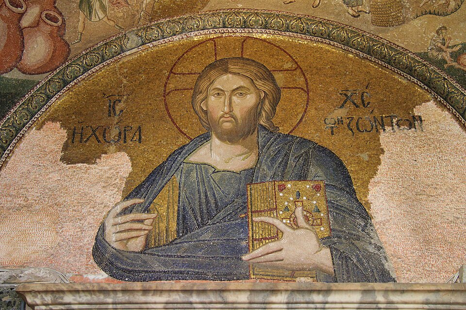
Dentro nos espera uno de sus tesoros. Un destello atrae la mirada hacia un mosaico bizantino de Cristo Pantocrátor, señor de todas las cosas, con el Evangelio en la mano. Las teselas doradas de Cora recogen la luz y hacen resplandecer las imágenes sagradas, ofreciendo a los fieles una visión más allá de lo cotidiano.
Al continuar nuestro paseo por el mapa, encontramos otras joyas escondidas.
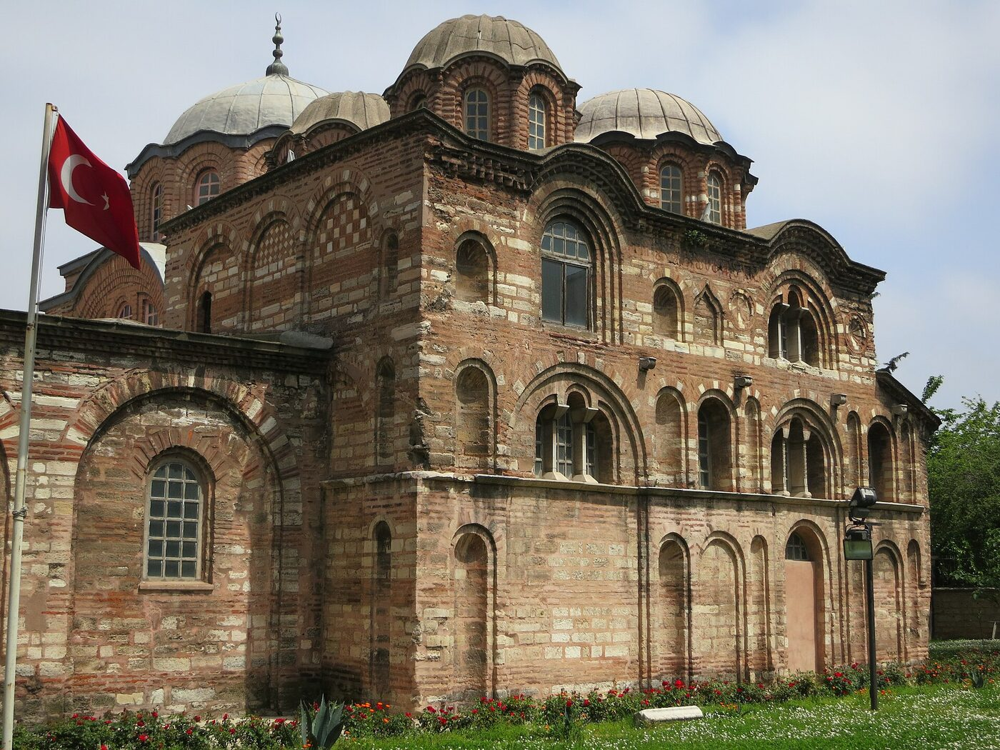
Aquí está la Iglesia de la Virgen Pammakaristos, hoy Mezquita de Fethiye. Fue sede del Patriarcado griego ortodoxo después de la caída de la ciudad. Su parekklesion, o capilla lateral, es un cofre de arte sacro.
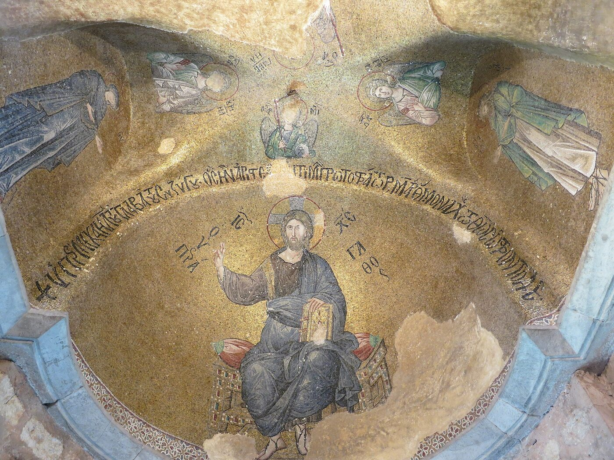
En el interior, la mirada navega entre mosaicos dorados y se detiene en el majestuoso Cristo Pantocrátor del parekklesion, entre profetas y figuras sagradas: una imagen cuya belleza y espiritualidad recuerdan los mosaicos de Cora.
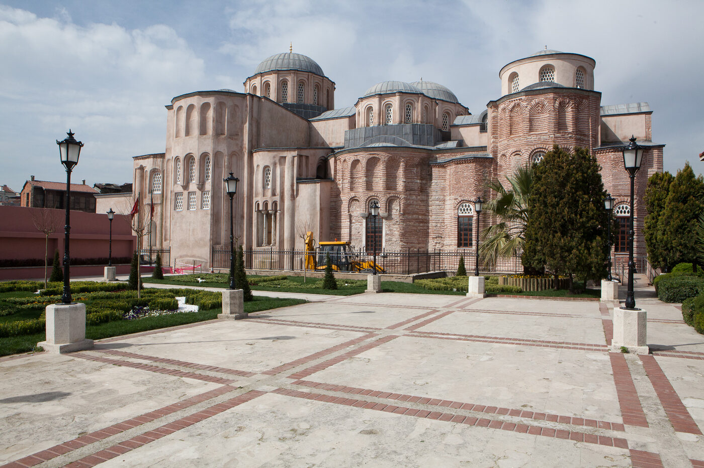
Cerca se alza la imponente Iglesia del Monasterio de Cristo Pantocrátor, hoy Mezquita de Zeyrek, uno de los mayores conjuntos religiosos bizantinos conservados en Estambul después de Santa Sofía. No es una sola iglesia, sino tres edificios unidos: un gigante de ladrillo que domina la colina.
Al acercarnos al mar, el mapa señala la Iglesia de los Santos Sergio y Baco, hoy conocida como Pequeña Santa Sofía, Küçük Ayasofya Camii.
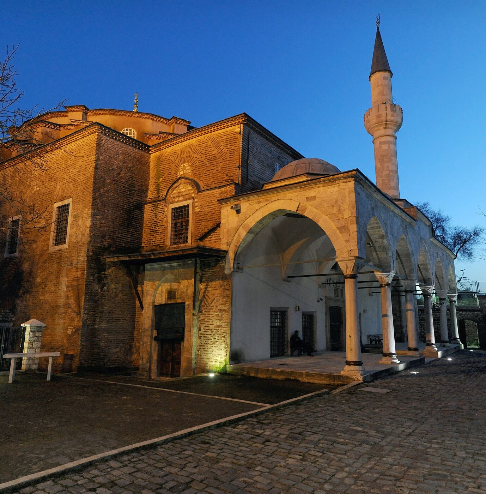
Su sobrenombre invita a compararla con la gran basílica de Justiniano. Construida en el siglo VI, pertenece a aquella extraordinaria época de experimentación arquitectónica. Al atardecer se aprecia su historia superpuesta: la fábrica bizantina de ladrillo, el pórtico de columnas otomano, el son cemaat yeri, y el minarete añadido al convertirse en mezquita.
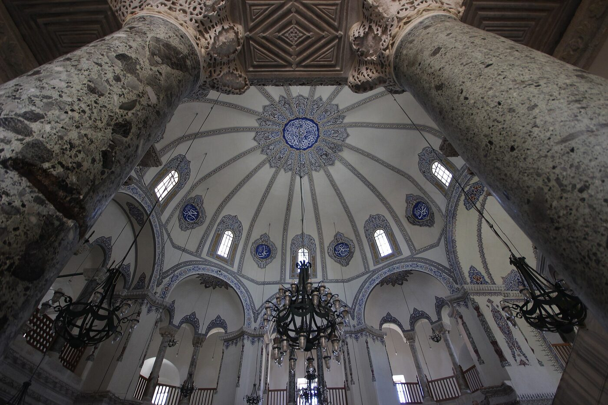
Dentro, la mirada asciende por las columnas de mármol hasta la compleja cúpula segmentada. El interior ha cambiado con los siglos, pero sus proporciones todavía transmiten la ambición y la inventiva arquitectónica de la época de Justiniano.
Las huellas más famosas nos esperan en el corazón de la ciudad antigua.
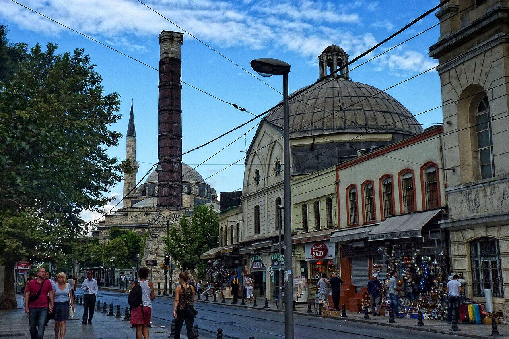
En la calle principal, la mirada tropieza con la Columna de Constantino, Çemberlitaş. Oscurecida por el tiempo y ceñida por aros de hierro, es el ombligo simbólico de la ciudad, erigido en el año 330 para celebrar la inauguración de la Nueva Roma de Constantino.
El paseo llega al Hipódromo, hoy la amplia plaza de Sultanahmet. Los monumentos que adornaban el centro del circuito de carreras, la spina, siguen ahí, desafiando los milenios.
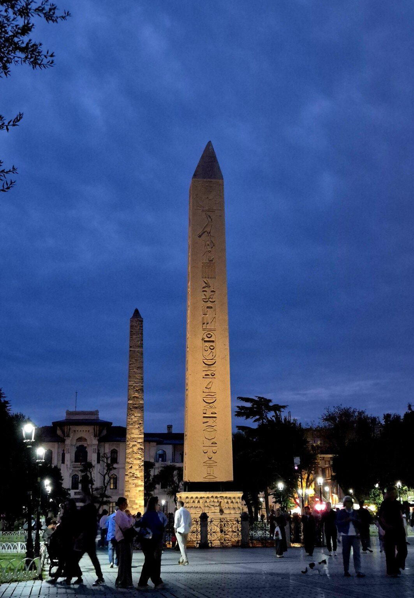
En la penumbra, la mirada interroga a dos testigos de piedra: el Obelisco de Teodosio, traído de Egipto en el siglo IV, y, detrás, el Obelisco de mampostería. Restos de la grandeza bizantina, hoy velan sobre la vida nocturna de la plaza.
La Iglesia de la Santa Sabiduría, Santa Sofía, es hoy Ayasofya. Casi con reverencia, la mirada asciende hacia la cúpula emblemática de Constantinopla contra el cielo. Es la Ch. of S. Sophia del mapa, un monumento que ha sobrevivido a los siglos y sigue evocando la ciudad antigua.
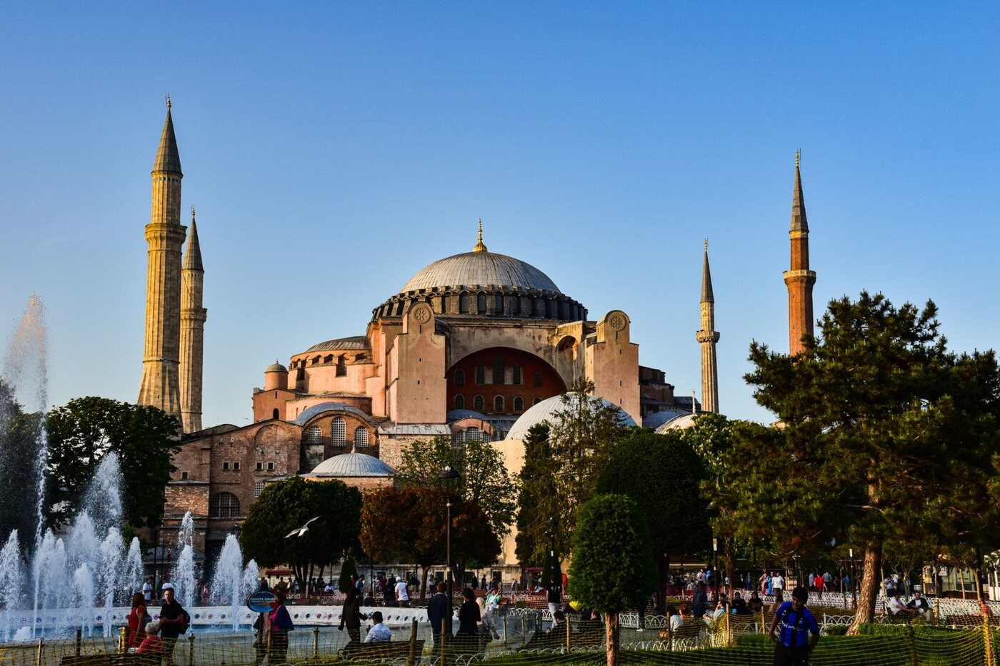
Aparece otra perspectiva, enmarcada por la geometría oscura de una reja. Entre el jardín y las palmeras, la cúpula y los minaretes de Santa Sofía brillan contra el cielo azul: un monumento milenario entrevisto desde un umbral de la Estambul cotidiana.
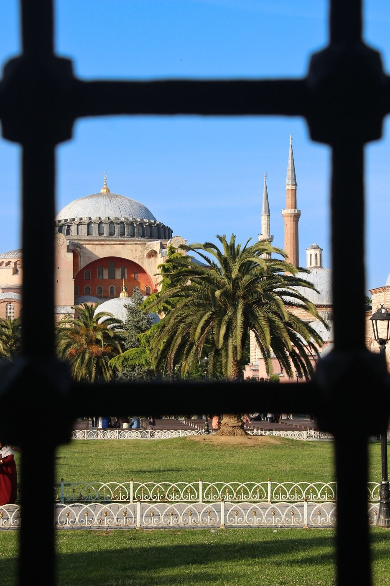
Pero el corazón de Constantinopla no latía solo en la superficie. Muy cerca se esconde el Palacio Sumergido: la Cisterna Basílica.
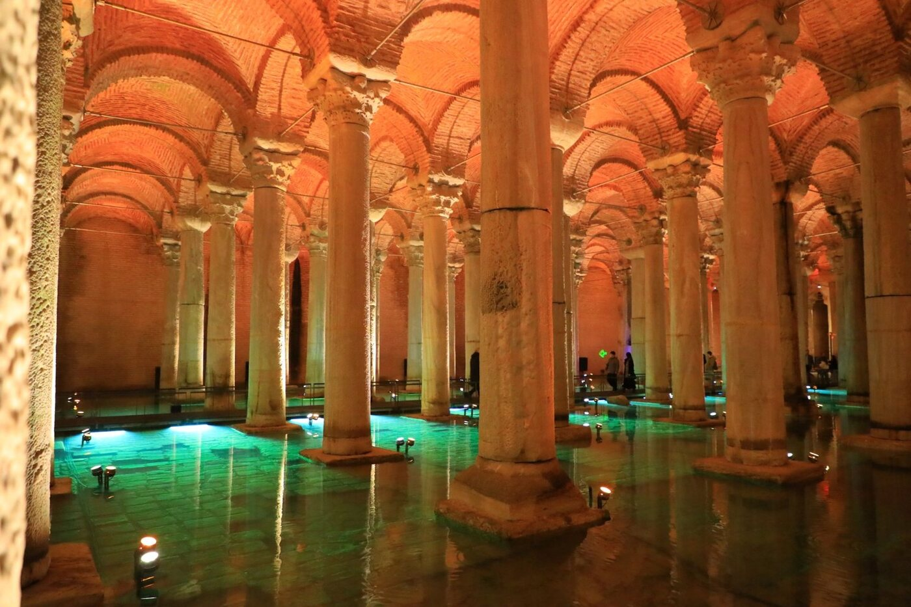
Aquí la mirada desciende a la oscuridad y al agua, perdiéndose en un bosque de 336 columnas de mármol. Al fondo encuentra el mito: dos cabezas de Medusa, una invertida y otra de lado, reutilizadas como bases de columnas. Las imágenes antiguas se incorporaron a los cimientos de la ciudad cristiana; el motivo exacto de su posición sigue siendo incierto.
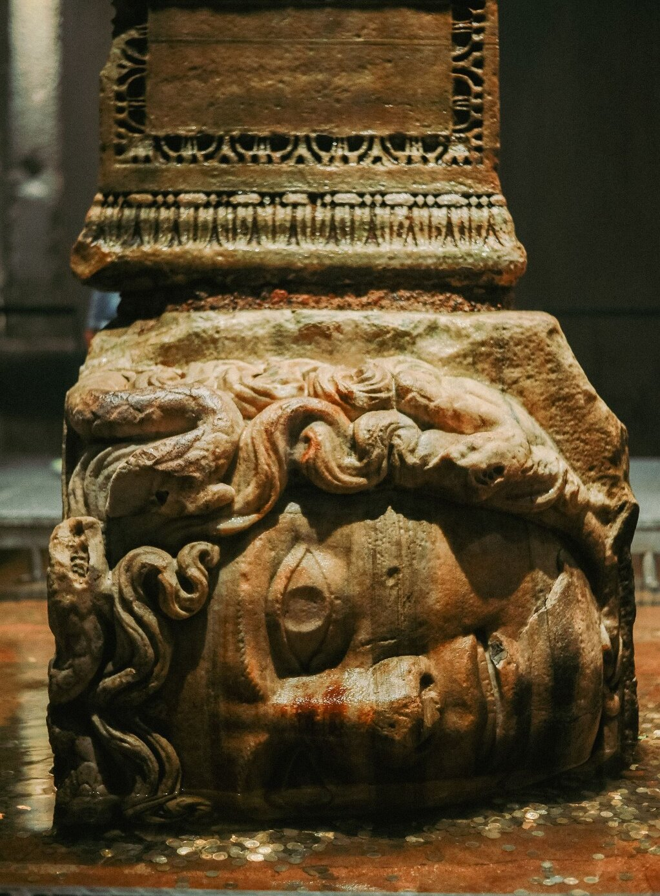
Pasear hoy por Fatih significa recorrer los restos de la antigua Constantinopla. Su trazado urbano, sus murallas y los monumentos conservados dan testimonio de siglos de historia.
Antes de abandonar este mundo de piedra y siglos, la mirada toma un último respiro: un vuelo sobre las Murallas de Teodosio. Suspendidos entre pasado y presente, nos despedimos de Constantinopla desde lo alto antes de volver a la Estambul actual.
Las Murallas de Teodosio desde el aire: el último aliento de Constantinopla.
Finalmente, saciada de historia, la mirada se ensancha. Del mapa antiguo pasamos a una panorámica de la Estambul actual. La Süleymaniye ocupa el primer plano; más allá de sus cúpulas se abren el Cuerno de Oro, el Puente de Gálata y el Bósforo. Las orillas europea y asiática, los ferris, los yates y los lejanos rascacielos revelan una ciudad inmensa que ha crecido alrededor de su corazón antiguo. Una sola fotografía no puede abarcarla entera, pero permite intuir hasta dónde se extiende.
Eminönü y el Puente de Gálata
Tras el paseo por el pasado, regresamos al presente. Para mí, ningún lugar encarna la idea de corazón palpitante como Eminönü Meydanı. No es una plaza en el sentido ordenado del Renacimiento italiano. Es un cruce vital, un glorioso hormiguero donde la ciudad se encuentra con el agua.
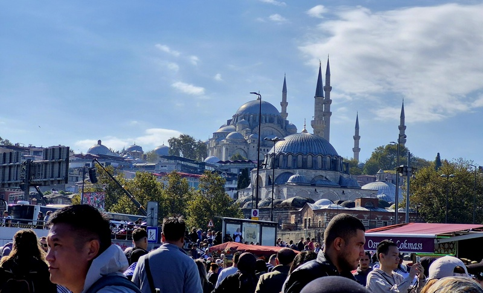
Eminönü, el corazón palpitante: un río de rostros a la sombra de las cúpulas imperiales.
Los muelles son los verdaderos protagonistas. Desde aquí, los vapur, los ferris, parten sin descanso, cosiendo la orilla europea con la asiática, remontando el Cuerno de Oro o recorriendo el Bósforo. El aire asalta los sentidos: el eco metálico de los tranvías, los pregones de los vendedores de simit, el grito de las gaviotas y el olor inconfundible del balık ekmek, el bocadillo de pescado.
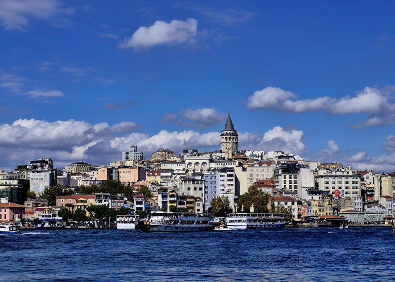
Beyoğlu desde los muelles de Eminönü: una invitación al diálogo a través del Cuerno de Oro.
Dominando este bullicio, casi como guardiana de la entrada del puente, se alza Yeni Camii, la Mezquita Nueva. Su nombre es un dulce engaño: lleva siendo “nueva” casi cuatro siglos.
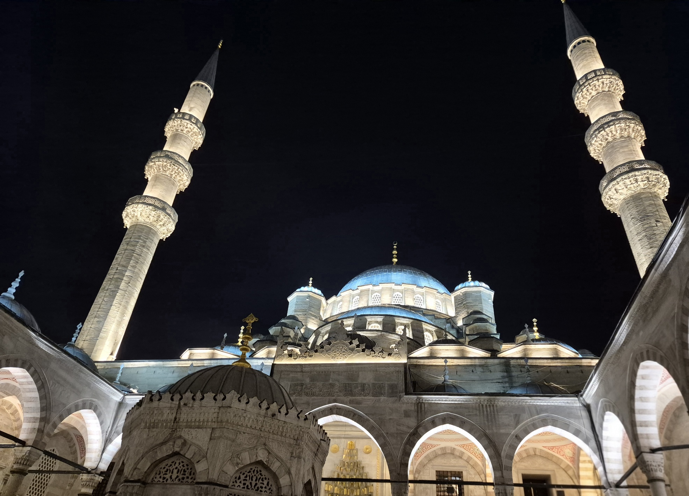
Yeni Camii: la piedra que reza bajo un cielo de tinta.
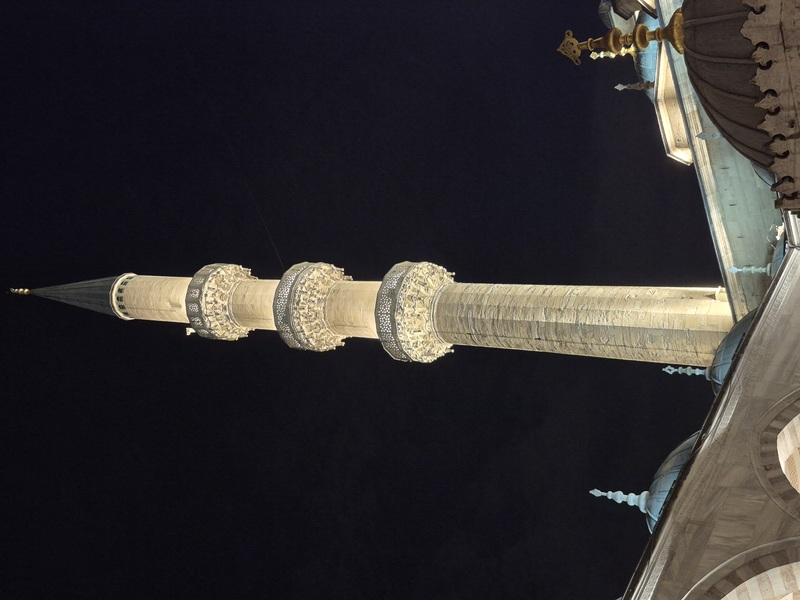
Yeni Camii, elegancia otomana: la aguja que borda la noche de Estambul.
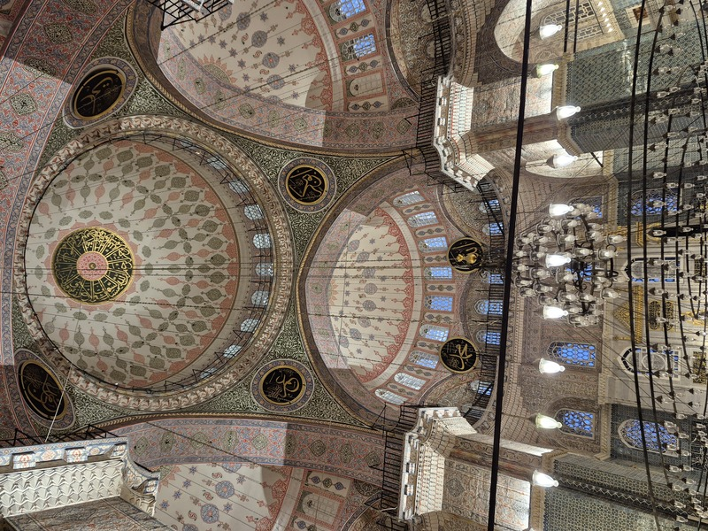
Yeni Camii: un cielo estrellado de lámparas en un jardín de azulejos.
Pero el verdadero protagonista de este capítulo es el propio puente. El Puente de Gálata es mucho más que asfalto: un escenario de dos niveles, un barrio flotante.
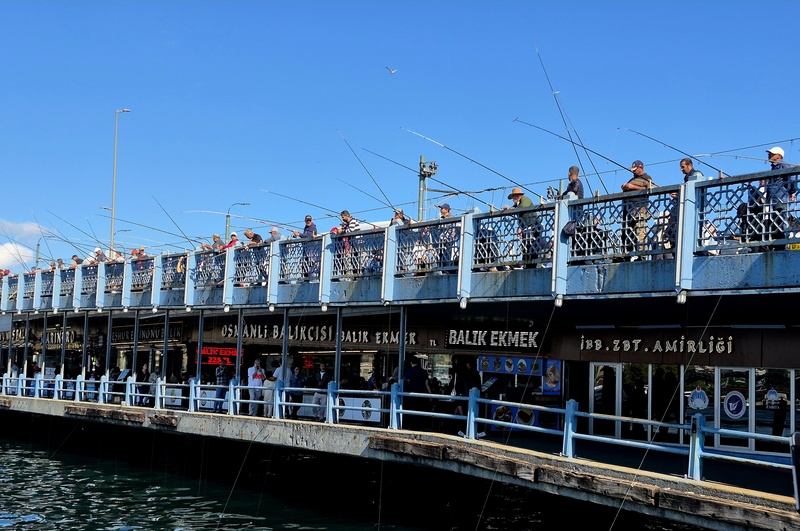
Sedales tendidos hacia la historia: los pescadores de Gálata, un ritual entre cielo y agua.
El nivel inferior ofrece otro mundo: comida y descanso, con una larga sucesión de restaurantes.
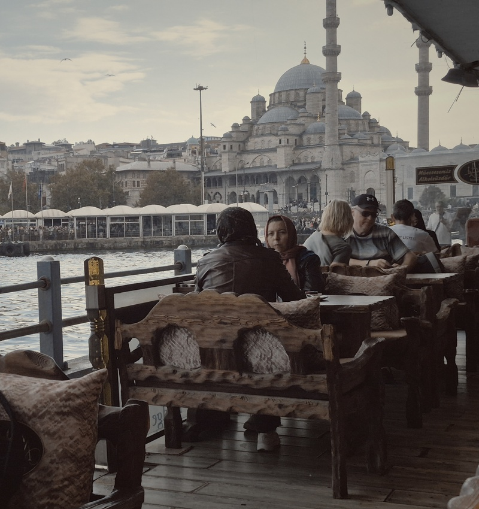
Cenar suspendidos sobre el agua, donde las orillas y sus almas se contemplan.
Gálata y Pera
Cruzar el puente significa salir de un mundo y entrar en otro. Llegamos a Karaköy y empezamos a subir. La colina de Beyoğlu, la antigua Pera, nos recibe con una energía diferente.
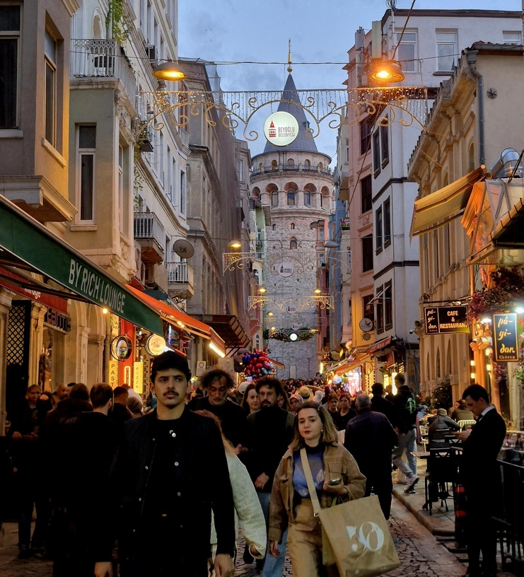
Hacia la otra alma: ecos de Europa en los adoquines de Gálata.
Como muestra la fotografía, los callejones se estrechan, las calles empedradas ascienden y la arquitectura cambia: fachadas neoclásicas, de fin de siglo, europeas. Es la otra alma de la ciudad, la levantina.
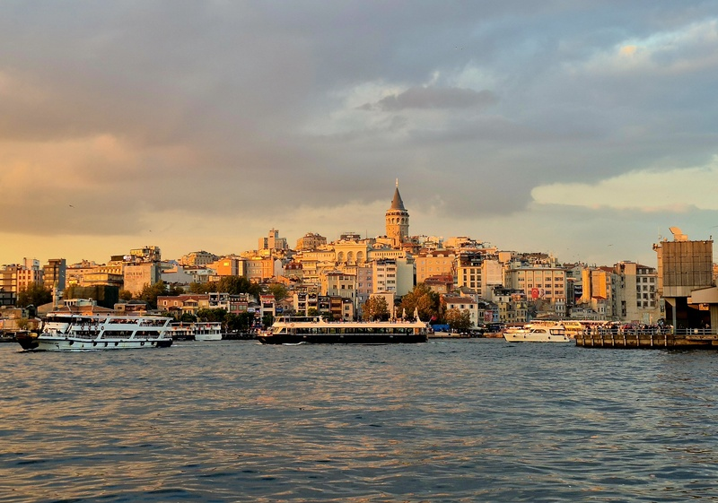
La colina dorada: la mirada de Europa al atardecer.
Y allá arriba, dominándolo todo, está Galata Kulesi, la Torre de Gálata. Más que un punto en el horizonte, es una presencia física, el eje alrededor del cual gira la vida del barrio.
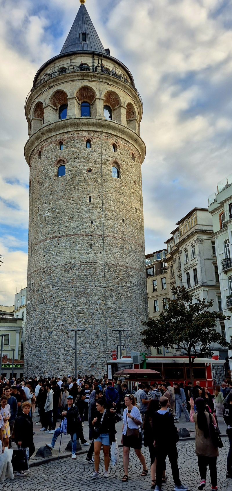
Bajo la centinela genovesa: el corazón joven de Beyoğlu.
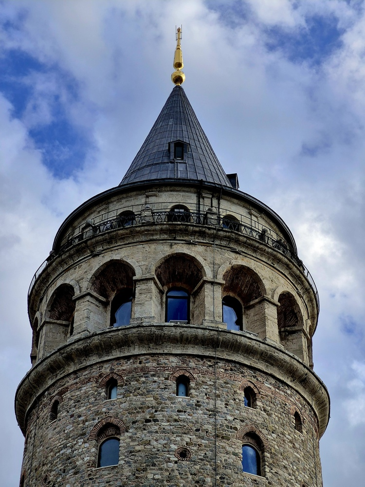
La mirada de la Christea Turris: siete siglos contemplando el Cuerno de Oro.
La plaza a sus pies bulle con una multitud joven y cosmopolita, distinta del ambiente más tradicional de Eminönü. Es la torre genovesa, la Christea Turris, la mirada de Europa que lleva casi siete siglos observando la ciudad antigua desde la otra orilla.

Al llegar arriba nos espera la recompensa. La mirada abarca el alma múltiple: los tejados rojos de Gálata, el Puente de Gálata sobre el Cuerno de Oro y la península histórica de Fatih. Reconocemos Eminönü y Yeni Camii, la entrada del Bazar de las Especias y, majestuosa sobre la colina, la mezquita de Solimán el Magnífico. El Caos Fascinante, visto desde lo alto.
El alma europea de Beyoğlu y Pera tiene su salón más brillante: el Hotel Pera Palace.
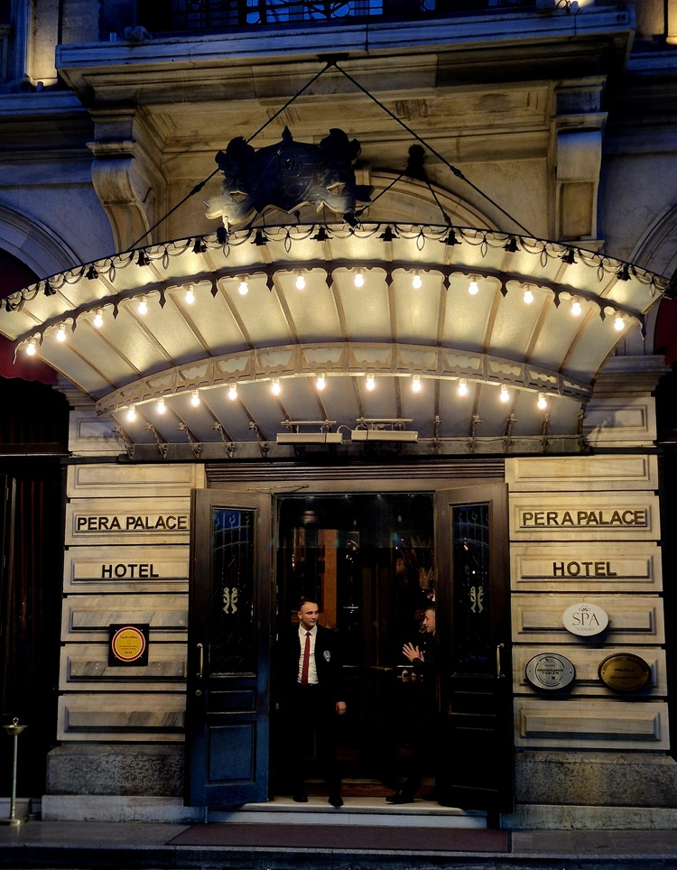
El emblemático Pera Palace: más que un hotel, refugio de lujo para los viajeros del Orient Express y salón cosmopolita de Estambul.
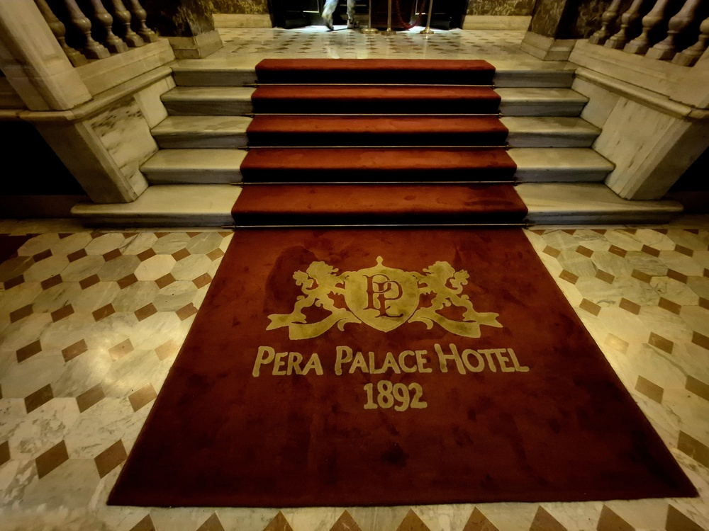
El emblema del Pera Palace tejido en la alfombra de entrada: el rojo del lujo y 1892, el año en que todo comenzó.
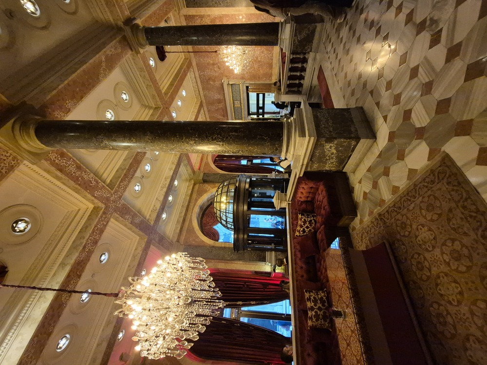
El Kubbeli Saloon del Pera Palace: una inmersión en la elegancia de la Belle Époque.
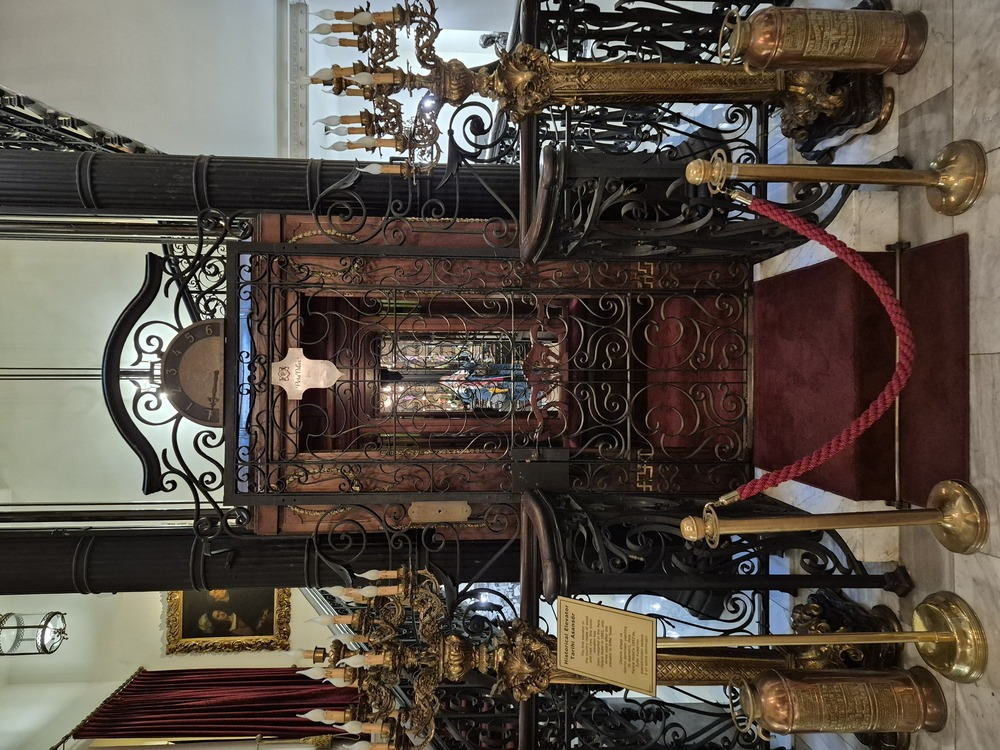
El ascensor histórico del Pera Palace.
Su histórico ascensor eléctrico es testigo de aquella época: una joya de madera y hierro forjado que transportaba a reyes, espías, escritores y diplomáticos entre plantas suntuosas, evocando el entusiasmo de los primeros tiempos de la electricidad.
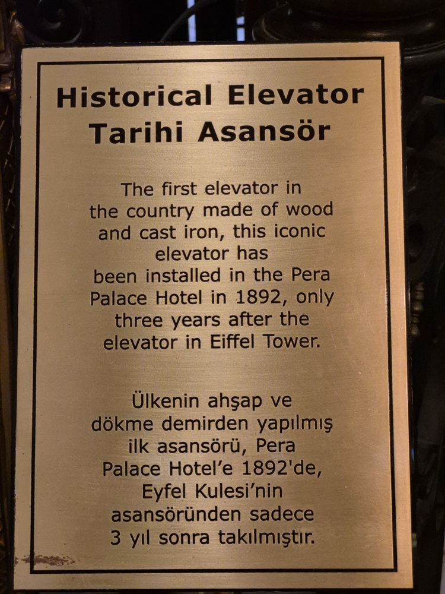
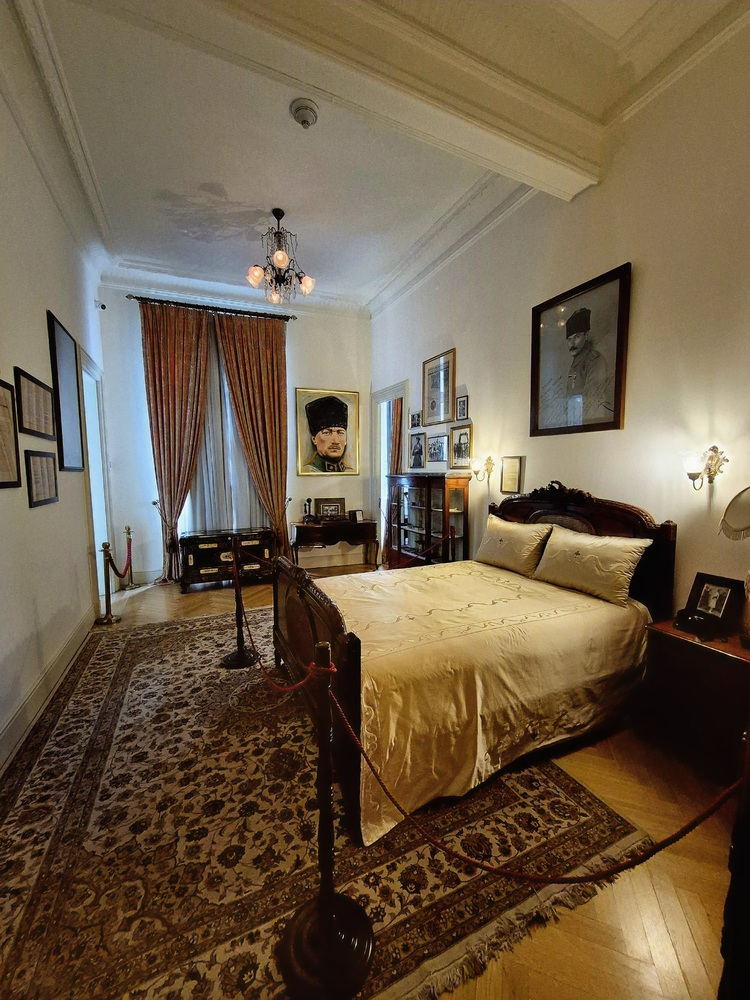
La habitación de Atatürk en el Pera Palace.
La habitación 101 era el alojamiento habitual de Mustafa Kemal Atatürk durante sus estancias en la ciudad. Hoy sus recuerdos evocan al fundador de la República y los años en que se estaba definiendo el futuro de la nación.
Otra fascinante contradicción de Estambul: los recuerdos de la República viven en el corazón de su barrio más cosmopolita e internacional.

Un casco moderno corta las aguas históricas del Bósforo. Al fondo, la ciudad revela su trama inseparable de riqueza, historia antigua y vida bulliciosa.
El Caos Fascinante del que hablo va más allá del desorden. Es la tensión vibrante entre lo imperial y lo levantino, lo otomano y lo genovés, lo tradicional y lo moderno, mirándose a través del agua. El agua separa estas almas y el puente palpitante las reúne en un abrazo eterno: una ciudad compleja, un alma múltiple.
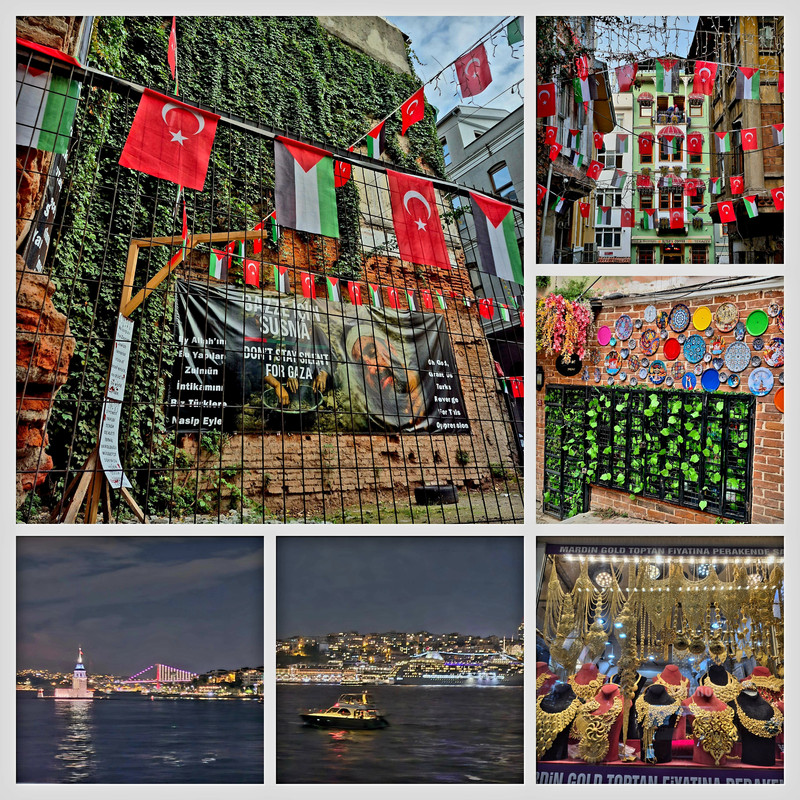
Últimas miradas. Lo sagrado y lo profano, lo antiguo y lo moderno, la alegría y la protesta se mezclan en los muros y en el agua. Esta es Estambul: una ciudad cuyas almas conviven en un equilibrio imposible y maravilloso. Los colores cotidianos trepan por muros cargados de historia y política; las luces milenarias reflejadas en el Bósforo se encuentran con el humo incesante de los ferris.
Todo es contradicción; todo es armonía. Eso es, en el fondo, el Caos Fascinante.

Pero el viaje por los estrechos acaba de empezar. Dejando atrás el vibrante caos de Estambul, nuestra ruta nos conduce hacia la otra hermana, la que vela sobre el Atlántico: Tánger, la Centinela.